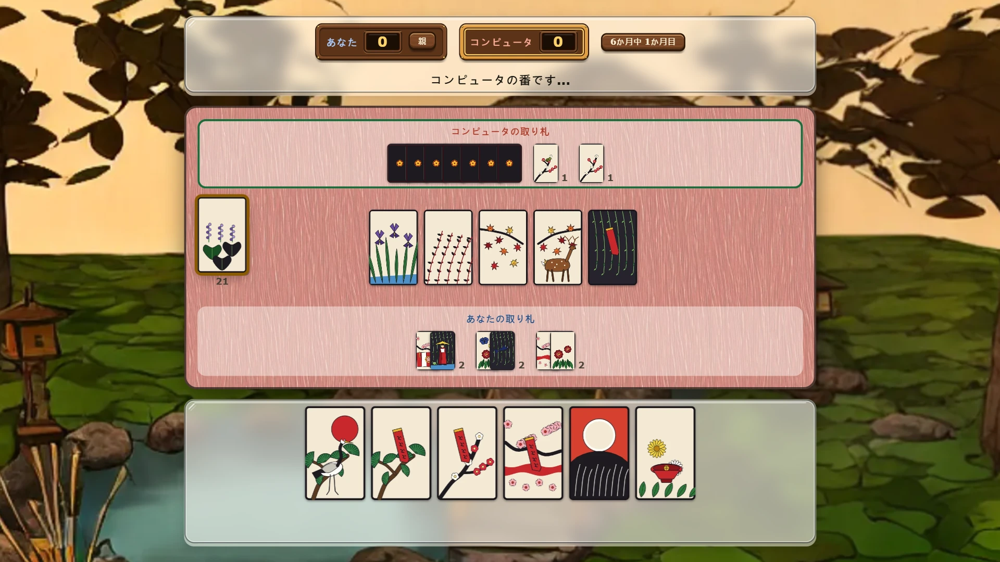
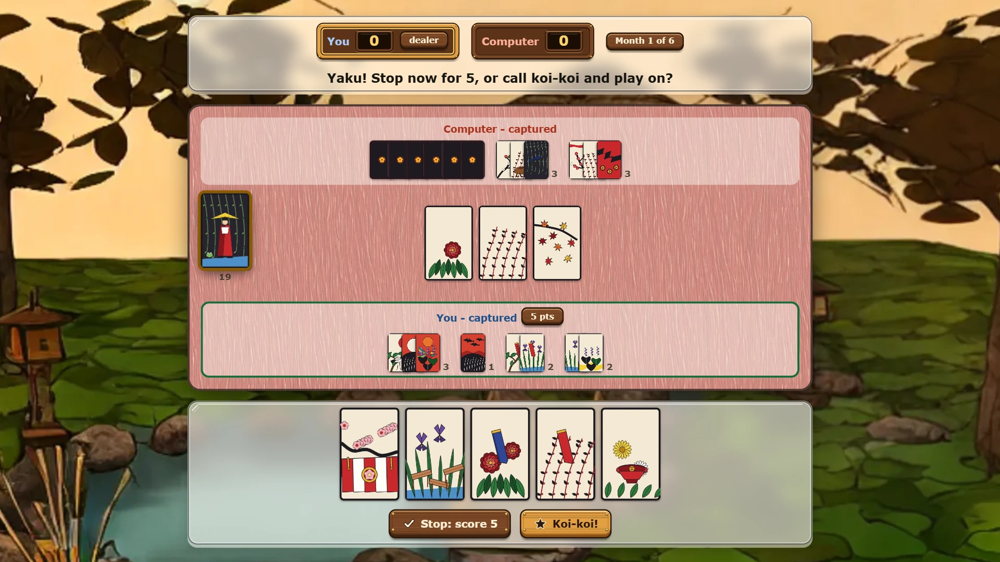

Hanawise — play koi-koi online free
Koi-koi is the best-known game played with hanafuda, the Japanese flower cards. Two players take turns matching cards by month, collect them into scoring sets called yaku, and then face one question each time a yaku appears: stop now and score, or call koi-koi and keep going for more. Hanawise plays it in the browser with Nintendo's rules, against the computer or a friend.

The flower cards
A hanafuda deck has 48 cards, four for each month of the year. Each month has its plant: pine for January, plum blossom for February, cherry blossom for March, and so on to paulownia in December. The month is what matters for matching. The picture tells you what kind of card it is.
There are four kinds. The five brights are the big pictures: the crane, the curtain of cherry blossom, the full moon, the rain man and the phoenix. Animals include the boar, the deer, the butterflies and the sake cup. Ribbons are the cards with a strip of red or blue paper. The rest are plain cards, worth little alone but useful in bulk. Nintendo, which has made hanafuda since 1889, still prints the deck and publishes the rules this game follows.
How to play koi-koi: a turn
Each player gets eight cards and eight more lie face up on the table. On your turn you play one card from your hand. If a table card shows the same month, you take both into your captured pile. If not, your card stays on the table. Then you turn over the top card of the stock and do the same with it. When two table cards match, you choose which one to take. When three match, you take all four.
Yaku: the scoring sets
You score only by forming yaku from the cards you have captured. These are the yaku in Hanawise:
| Yaku | What you need | Points |
|---|---|---|
| Goko | all five brights | 10 |
| Shiko | four brights without the rain man | 8 |
| Ame-shiko | four brights with the rain man | 7 |
| Sanko | three brights without the rain man | 5 |
| Tsukimi-zake | the moon and the sake cup | 5 |
| Hanami-zake | the cherry curtain and the sake cup | 5 |
| Inoshikacho | the boar, the deer and the butterflies | 5 |
| Akatan | the three red poetry ribbons | 5 |
| Aotan | the three blue ribbons | 5 |
| Tane | five animals, +1 for each extra | 1 |
| Tanzaku | five ribbons, +1 for each extra | 1 |
| Kasu | ten plain cards, +1 for each extra | 1 |
The sake cup counts as an animal and as a plain card at the same time. Yaku add up, so a pile with akatan, aotan and seven ribbons scores 5 + 5 + 3.
Koi-koi: stop or keep going
The moment your captures form a yaku, the game asks you to decide. Stop, and the month ends with your points. Call koi-koi, and play goes on in the hope of a bigger yaku. The risk is real: if your opponent forms a yaku before you add to yours, they score double and you score nothing for the month. There is only one call per month: once it is made, whoever forms a yaku first closes it.
If both hands run out and nobody has a yaku, the month is a draw and nobody scores.
Scoring a game
A score of 7 or more for one month is doubled. A player who stops after the other has called koi-koi doubles their points again. A dealt hand holding all four cards of one month, or four pairs, scores 6 points at once and the month ends there.
A full game of koi-koi is 12 months, one for each card of the year. Hanawise also offers three or six months for a shorter sitting, and whoever has the most points at the end wins.
Two ways to play
Against the computer you choose one of three levels. Easy often misses a capture and calls koi-koi on a whim. Medium takes the most valuable capture each turn and always stops on a yaku. Hard aims for the yaku it can finish, avoids leaving cards its opponent can match, and looks ahead before it calls koi-koi.
Friend online opens a room for two. Send the link or read out the six-letter code. Each player sees only their own hand, and the stock stays hidden from both. Friends can also watch a game from a watch link. Nobody needs an account.
Tips
Learn the brights first, because they score the most. Take the sake cup whenever you can, since it works for three different yaku. Keep an eye on what your opponent has captured: if they hold two of the boar, deer and butterflies, do not leave the third on the table. And think hard before calling koi-koi late in a month. A small sure score often beats a bigger one your opponent can take away.
More card and board games
For another card game for two, try Trucowise, with Argentine and Uruguayan truco. For a card game for up to four, try Congawise (Uruguayan conga). For a two-player board game, try Gomowise (Gomoku, five in a row).
More like this: 2-player games online · Multiplayer browser games